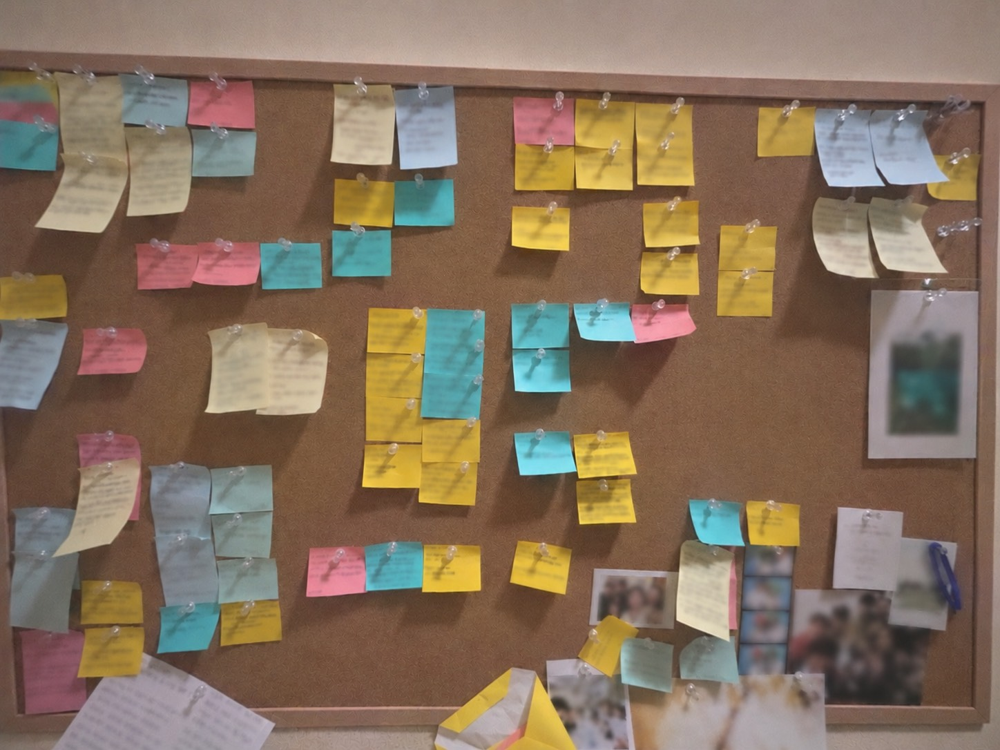

구독료는 이렇게 쓰여요
안녕하세요. wallflower를 혼자 만들고 있는 코지코예요.

캐나다에서 유학하던 시절, 저를 붙잡아 줬던 “나만의 문장 벽”을 앱으로 만들고 싶었어요. 그때 마음에 남은 문장을 메모지에 적어 방 한쪽 벽에 붙여 두곤 했거든요. 밤마다 외로움이 찾아오면 그 벽의 문장들을 읽었어요. 그날의 기분에 따라 새롭게 읽히기도 하고… 위로가 되기도 하고…
구독료는 이렇게 사용되어요
- 보기만 해도 기분이 좋아지는 템플릿을 계속 더할게요.
- 저작권료가 드는 유료 글꼴과 그림, 문장도 부담 없이 들여올 수 있어요.
- 요청해 주신 기능을 하나씩 만들어 갈게요. 읽는 시간을 더 풍성하게 하는 기능인지 깊이 고민하면서요.
구독자님께 드리는 약속
- 새 기능과 템플릿을 담은 업데이트를 정기적으로 내놓을게요.
- 보내 주신 의견은 하나하나 읽고, 정말 필요한 기능부터 만들게요.
구독이 부담스러우시다면, 한 번만 결제하는 평생 이용권도 있어요.
궁금한 점이나 바라는 기능이 있다면 언제든 알려 주세요. 이메일(gminlee.316+wallflower@gmail.com)이나 스레드(@cosy.coder)로 보내 주시면 반갑게 읽을게요. 피드백 매우매우 환영해요!
코지코 드림